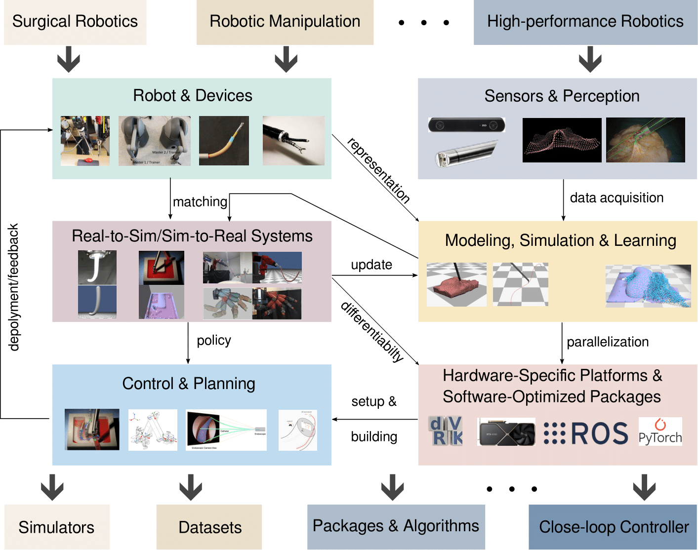

Surgical Robotics
Autonomous assistance, tool-tissue interaction, robotic suturing, safe manipulation, and perception for minimally invasive procedures.
University of Tennessee, Knoxville
We combine robotics, embodied AI, modeling, simulation, sensing, planning, and control to create intelligent, reliable, and efficient autonomous systems for complex real-world environments.
What we study
Our research spans autonomous systems from the physical platforms and sensors through modeling, learning, planning, control, and deployment.
Autonomous assistance, tool-tissue interaction, robotic suturing, safe manipulation, and perception for minimally invasive procedures.
Fast, stable, and differentiable models for deformable objects, soft tissue, fluids, and contact-rich robotic interaction.
Model-based and learning-based control, constrained motion planning, active sensing, and reliable closed-loop autonomy.
Geometric understanding, registration, reconstruction, tracking, and representation of dynamic three-dimensional environments.
Learning systems that connect perception and action, adapt through interaction, and transfer between simulation and the physical world.
Shared-control and dual-user interfaces that support effective training, collaboration, and safe human-robot interaction.
How the pieces connect
AURAS develops complete robotic systems: devices and sensors inform physical models; simulation and learning support control and planning; and hardware-aware software turns those methods into deployable systems.
Browse publications